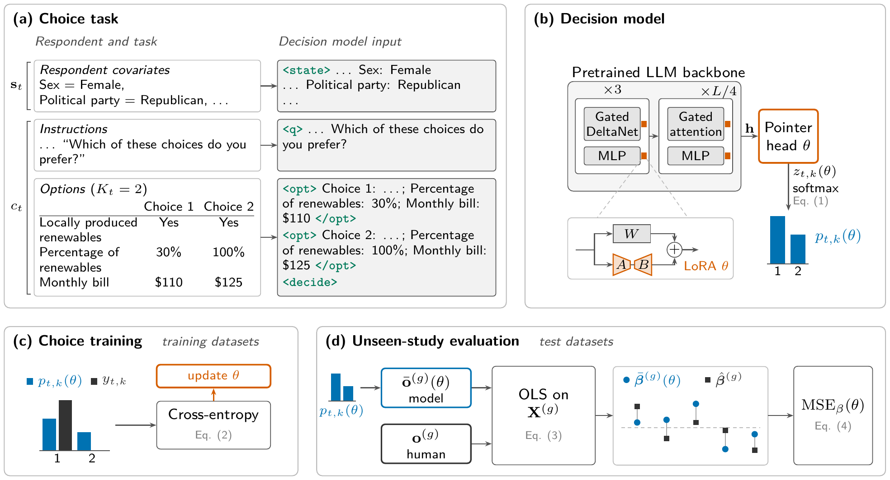
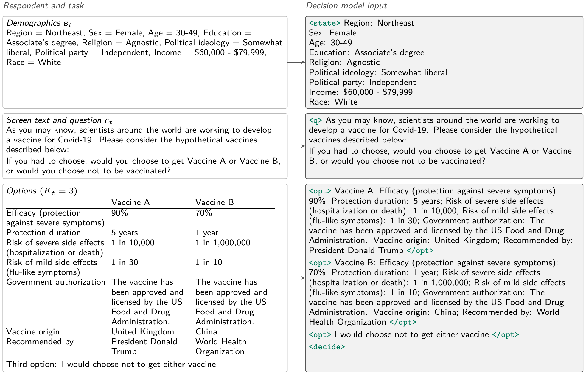

Training decision models for simulating human respondents
Abstract
[TODO]
Keywords. Decision models, Large Language Models, Synthetic respondents, Econometric inference, Marketing research
Introduction
Using foundation models as synthetic respondents to simulate consumer choices has attracted growing interest in marketing and behavioral research. In marketing, the primary goal is downstream econometric inference, such as estimating attribute slopes in conjoint analysis or recovering causal treatment effects in randomized experiments. Most studies generate synthetic choice data with off-the-shelf generative large language models (LLMs), yet substituting these outputs for human responses severely biases downstream regressions (Goli and Singh 2024, Leng et al. 2026, Wang et al. 2026). This bias arises because off-the-shelf LLMs are optimized for deterministic text generation and safety compliance, which collapses choice uncertainty and triggers refusals. For instance, on a vaccines conjoint subsample (Kreps et al. 2020), off-the-shelf models incur large ordinary least squares (OLS) treatment-effect error relative to human respondents (Wang et al. 2026). Contrary to common expectation, using proprietary models or increasing reasoning effort can even increase this error (Figure 1). Additionally, generative LLMs are slow and computationally expensive. Since they produce responses as tokens, approximating their choice probabilities requires costly Monte-Carlo sampling.
To overcome the time and computation costs of text generation, we investigate system one decision models (Deußer et al. 2026, Geuter et al. 2026, Palmer 2026). Unlike generative LLMs, a decision model replaces the text-generation head with a scoring layer over candidate options. Given a respondent persona and choice task, it outputs normalized choice probabilities in a single forward pass. This single-pass directly generates the probability distribution of choices, eliminates Monte Carlo sampling cost and noise, and yields exact expected OLS treatment effects directly from predicted probabilities. Despite their architectural advantage, off-the-shelf decision models still suffer from high error in their OLS estimates (Figure 1). Because these models are pretrained on single-label objective benchmarks rather than human choice behavior, they treat disagreement among respondents with the same persona as classification error (Gao et al. 2026).
In this research, we train decision models by updating their weights on historical human choice microdata, a procedure we call choice training. Specifically, we minimize respondent-level cross-entropy (CE), which is equivalent to conditional maximum likelihood estimation, and test whether choice training transfers to unseen marketing and behavioral studies.

Note. Bars report OLS \(\mathrm{MSE}_\beta \times 10^3\) (Equation 4) across 11 vaccine attribute levels on the 200-respondent Vaccines conjoint subsample (n = 1,000 choice tasks; Wang et al. 2026). Errors are measured relative to full-sample human estimates (N = 1,971 respondents; 9,855 choice tasks).
Empirically, we evaluate choice training across three open-weight decision-model scales (0.8B, 4B, and 9B parameters; Palmer 2026). We evaluate generalizability of our training on four unseen held-out studies: a nutrition-labeling trial (Grummon et al. 2025), a vaccine conjoint (Kreps et al. 2020), a consumer-rights conjoint (Kantorowicz-Reznichenko et al. 2026), and an AI smartphone conjoint (Magistro et al. 2026). We show that although scaling to proprietary models or increasing reasoning effort can worsens OLS MSE, choice training with respondent-level CE substantially lowers this error on unseen studies, across model scales.
Literature review
Early work in silicon sampling prompted generative LLMs with demographic profiles to simulate human responses in political, economic, and marketing surveys (Argyle et al. 2023, Brand et al. 2023, Horton et al. 2023, Santurkar et al. 2023, Durmus et al. 2024, Goli and Singh 2024, Sarstedt et al. 2024). Although generative LLMs often capture the direction of average preferences, prior studies document systematic discrepancies from human populations, including mode collapse onto a single option, attenuated within-group variance, demographic stereotyping, and prompt sensitivity (Santurkar et al. 2023, Koo et al. 2024, Shu et al. 2024, Wadi and Fredette 2025, Deas and McKeown 2025, Kabir et al. 2025, Zahradnickova et al. 2026, Jung et al. 2026). In marketing applications, these distortions severely bias downstream econometric estimation (Goli and Singh 2024, Leng et al. 2026, Wang et al. 2026). In choice-based conjoint analysis, relying on simulated choices or naively pooling them with human data biases preference estimates, while scaling model capability or chain-of-thought reasoning worsens error by inducing overly deterministic choices (Wang et al. 2026). Recent marketing studies address these discrepancies after inference by treating the language model as a fixed generator, using target-study human benchmark data to statistically debias downstream regression parameters (Wang et al. 2026, Angelopoulos et al. 2023; AAE) or optimally reweight ensembles of candidate prompts, personas, and model checkpoints (Leng et al. 2026; HuMCal). Complementing these post-inference methods, we align predictions inside the model before inference through both output architecture and training supervision.
Architecturally, several studies avoid the cost and sampling variance of repeated Monte Carlo text generation by extracting next-token probabilities over option symbols (e.g., A, B, and C) from causal LLMs (Kadavath et al. 2022, Kuribayashi et al. 2024, Bentegeac et al. 2025, Wadi et al. 2026). Yet symbol-level readouts remain sensitive to vocabulary and token-frequency priors. Decision models, also known as System One architectures, resolve this sensitivity via a single-pass scoring head (Asseri and Asseri 2026, Deußer et al. 2026, Geuter et al. 2026, Li 2026, Li and Wagle 2026, Palmer 2026). This head evaluates each supplied option directly in representation space and restricts probability mass strictly to the valid options without open-ended generation or safety refusals. Crucially for econometric training, outputting exact choice probabilities in a single forward pass makes linear regression operators over experimental designs directly differentiable with respect to model parameters. However, existing decision models are pretrained on single-label objective benchmarks such as mathematics, code verification, and factual question answering, causing severe probability miscalibration on subjective choice tasks (Gao et al. 2026).
On the training dimension, existing fine-tuning approaches for silicon sampling require access to unreleased response data. At the token level, Wang et al. (2026) fine-tuned GPT-4o on 50 target-study conjoint tasks under a generic persona to emit a single choice letter, finding that small-sample single-token supervision worsened standalone parameter error relative to the human benchmark. Recent studies improve calibration by supervising causal language models or decision heads on large-scale survey microdata and subgroup response histograms (Suh et al. 2025, Ku et al. 2026, Huang et al. 2026). When respondent-level choice microdata is available, minimizing CE on a probabilistic decision head effectively calibrates conditional choice probabilities across personas. Yet across conjoint analysis, discrete-choice modeling, and randomized online or field trials, published articles and archival industry reports rarely disclose raw respondent choices, reporting instead experimental designs and estimated regression tables. We bridge this data gap by supervising decision models directly on published population OLS coefficients via an unbiased split-sample moment loss, deployed either standalone with a base-distribution KL anchor when no microdata exists or jointly alongside respondent-level CE when augmenting in-house microdata with external literature tables.
Methodology

Decision model parameterization. Consider a choice study composed of discrete-choice tasks indexed by \(t\) (Figure 2, panel a). Each task pairs observed respondent covariates \(\mathbf{s}_t\) (e.g., sex, age, education, income, political affiliation, and race) with a task context \(c_t\) specifying the instructions and \(K_t \ge 2\) discrete options. Let \(y_{t,k} \in \{0, 1\}\) indicate whether the human respondent selects option \(k \in \{1, \dots, K_t\}\) on task \(t\), with \(\sum_{k=1}^{K_t} y_{t,k} = 1\).
Rather than generating text tokens autoregressively, a single-pass decision model replaces the vocabulary head of a pretrained language model with a pointer head that scores all \(K_t\) options in one forward pass (Figure 2, panel b). For each option \(k\), the model computes a real-valued score \(z_{t,k}(\theta)\) from \((\mathbf{s}_t, c_t)\), where \(\theta\) collects trainable low-rank adaptation (LoRA) weights (Hu et al. 2021) on the backbone together with the pointer-head parameters (token serialization and query-key readout equations appear in the Web Appendix). Applying a softmax transformation with unit temperature produces the conditional choice probabilities: \[ p_{t,k}(\theta) = P\big(y_{t,k} = 1 \mid \mathbf{s}_t, c_t; \theta\big) = \frac{\exp\!\big(z_{t,k}(\theta)\big)}{\sum_{m=1}^{K_t} \exp\!\big(z_{t,m}(\theta)\big)}. \tag{1}\] Formally, Equation 1 takes the conditional multinomial logit form (McFadden 1972, Train 2009) with \(z_{t,k}(\theta)\) acting as systematic utility. Because Equation 1 normalizes directly over \(\{1, \dots, K_t\}\) without text decoding, refusals and out-of-set outputs have zero probability by construction.
Choice training. Off-the-shelf decision models are pretrained on objective single-label benchmarks where each task has a single correct answer (Gao et al. 2026, Palmer 2026). Training on deterministic labels widens score gaps across options and pushes predicted probabilities \(p_{t,k}(\theta)\) toward zero and one. In human choice studies, however, respondents with identical observed covariates \(\mathbf{s}_t\) still differ in unobserved preferences. Therefore, the true conditional choice distribution spreads probability mass across options rather than collapsing onto a single mode.
Whereas post-inference adjustment and reweighting methods keep model parameters fixed and require human data from the target study (Leng et al. 2026, Wang et al. 2026), choice training updates \(\theta\) before inference on historical respondent-level choice microdata (Figure 2, panel c). Starting from the off-the-shelf model checkpoint, we treat repeated tasks per respondent marginally under a pooled conditional log-likelihood and minimize empirical cross-entropy over mini-batches \(S\) of historical tasks: \[ \mathcal{L}_{\mathrm{CE}}(\theta; S) = -\frac{1}{|S|} \sum_{t \in S} \sum_{k=1}^{K_t} y_{t,k} \log p_{t,k}(\theta). \tag{2}\] Minimizing Equation 2 is equivalent to pooled conditional maximum likelihood estimation of Equation 1. Because cross-entropy is a strictly proper scoring rule, its population minimizer recovers true conditional choice probabilities rather than a deterministic mode. Importantly, no target-study data enters Equation 2, so downstream evaluation measures unseen-study transfer.
Econometric evaluation. On an unseen evaluation study, we hold \(\theta\) fixed and evaluate treatment-effect recovery using ordinary least squares (OLS) regressions defined by the study’s experimental design (Figure 2, panel d). Applying the same linear specification symmetrically to both human responses and model-implied expected outcomes places the human benchmark and synthetic choice data on a common estimator. Consider each regression \(g \in \{1, \dots, G\}\) in the study, with full-column-rank design matrix \(\mathbf{X}^{(g)}\) and human outcome vector \(\mathbf{o}^{(g)}\). The matrix \(\mathbf{X}^{(g)}\) contains an intercept and \(d_g\) treatment or attribute indicators from the randomized design. Across all evaluation designs, each entry of \(\mathbf{o}^{(g)}\) is a linear function of the choice indicators \(y_{t,k}\). Specifically, it records a profile-selection indicator in paired conjoints (zero across profiles when an opt-out is chosen), a target-option indicator in binary-endpoint trials, or the numeric score \(\sum_{k=1}^{K_t} k\,y_{t,k}\) in ordinal rating tasks. Replacing each realized indicator \(y_{t,k}\) with its predicted probability \(p_{t,k}(\theta)\) from Equation 1 therefore yields the exact expected outcome vector \(\bar{\mathbf{o}}^{(g)}(\theta)\) under synthetic choice draws.
Applying the OLS operator \(\mathbf{A}^{(g)} = (\mathbf{X}^{(g)\top}\mathbf{X}^{(g)})^{-1}\mathbf{X}^{(g)\top}\) to the human and model-implied outcome vectors defines the intercepts and slopes: \[ \begin{pmatrix} \hat{\alpha}^{(g)} \\ \hat{\boldsymbol{\beta}}^{(g)} \end{pmatrix} = \mathbf{A}^{(g)}\mathbf{o}^{(g)}, \qquad \begin{pmatrix} \bar{\alpha}^{(g)}(\theta) \\ \bar{\boldsymbol{\beta}}^{(g)}(\theta) \end{pmatrix} = \mathbf{A}^{(g)}\bar{\mathbf{o}}^{(g)}(\theta), \tag{3}\] where \(\hat{\alpha}^{(g)}\) and \(\bar{\alpha}^{(g)}(\theta)\) are the intercepts, \(\hat{\boldsymbol{\beta}}^{(g)}\) is the full-sample human slope benchmark, and \(\bar{\boldsymbol{\beta}}^{(g)}(\theta)\) collects the \(d_g\) model-implied treatment or attribute slopes. Because \(\mathbf{X}^{(g)}\) is fixed and OLS is linear in the outcome vector, \(\bar{\boldsymbol{\beta}}^{(g)}(\theta)\) equals the exact expectation of the OLS slope estimator over synthetic choices drawn from \(p_{t,k}(\theta)\), with zero Monte Carlo variance. Note that Equation 3 targets point-estimate recovery rather than plug-in standard errors, because regressing deterministic expectations \(\bar{\mathbf{o}}^{(g)}(\theta)\) omits realization-level sampling variance.
Because all \(G\) regressions within each study share identical outcome units, we measure aggregate slope recovery across all \(d = \sum_{g=1}^G d_g\) slopes via mean squared error (Wang et al. 2026): \[ \mathrm{MSE}_{\beta}(\theta) = \frac{1}{d} \sum_{g=1}^G \left\lVert \bar{\boldsymbol{\beta}}^{(g)}(\theta) - \hat{\boldsymbol{\beta}}^{(g)} \right\rVert_2^2. \tag{4}\] As a complementary individual-level diagnostic, we also report held-out empirical cross-entropy in nats by evaluating Equation 2 over all tasks in each unseen study alongside Equation 4 in Table 2.
Experimental setup
Datasets and transfer design
We evaluate choice training across seven choice datasets spanning various product and policy domains, with no overlap between training, validation, and testing (Table 1). Two datasets provide respondent-level training microdata: a paired electricity-plan conjoint (Electricity; Wu 2025), and a discrete-choice experiment on drone versus ground delivery across four vendor contexts (Drones; Berke et al. 2023). Both training datasets vary price (monthly bill or delivery fee) alongside non-price attributes. To prevent held-out test datasets from informing model selection, we designate the Flights dataset (Goldfarb et al. 2026) as a dedicated validation dataset that selects every training run’s checkpoint.
Our four held-out test datasets never enter training, hyperparameter tuning, or checkpoint selection. Two include price over wider ranges than training (Consumer rights and AI & offshoring), whereas the other two share no attributes with training (Food labels and Vaccines). Together, these test datasets span paired conjoints, a three-option conjoint with an opt-out (Vaccines), a five-point ordinal rating conjoint (AI & offshoring), and a six-arm randomized trial (Food labels). Across all seven datasets, each choice task conditions on the respondent’s observed covariates \(\mathbf{s}_t\) in a standardized text format (Figure 2, panel a; mappings appear in the Web Appendix).
| Role | Dataset | Price attributes | Non-price attributes | Respondents | Tasks | \(d\) |
|---|---|---|---|---|---|---|
| Training | Electricity (Wu 2025) | Monthly bill ($105 to $125) | Renewable share (10% to 100%), local renewables | 1,861 | 18,591 | 8 |
| Training | Drones (Berke et al. 2023) | Delivery fee ($0 to $10) | Wait time, drone privacy | 3,625 | 36,297 | 28 |
| Validation | Flights (Goldfarb et al. 2026) | Ticket price ($250 to $325) | Sustainable aviation fuel, airline, baggage, legroom, seat | 1,000 | 5,000 | 12 |
| Test | Consumer rights (Kantorowicz-Reznichenko et al. 2026) | Laptop ($500 to $2,000) and laundry ($400 to $1,400) price | Brand, specs, warranty, privacy, liability, conflict resolution | 2,242 | 26,823 | 38 |
| Test | AI & offshoring (Magistro et al. 2026) | Smartphone price ($300 to $600) | Customer service, factory, and data science jobs | 5,525 | 21,005 | 32 |
| Test | Food labels (Grummon et al. 2025) | None | Front-of-package warning labels (6 arms) | 5,633 | 33,798 | 5 |
| Test | Vaccines (Kreps et al. 2020) | None | Efficacy, duration, side effects, FDA, origin, endorsements | 1,971 | 9,855 | 11 |
Note. Shorthand dataset labels in the Dataset column are used throughout all tables and figures. The column \(d\) reports the total number of non-reference treatment or attribute slopes across each dataset’s experimental design (Section 3): Drones spans four vendor contexts of 7 slopes each (28 total), Consumer rights spans two product conjoints of 19 slopes each (38 total), and AI & offshoring spans four country-by-arm regressions of 8 slopes each (32 total) on a five-point support scale (1 to 5). Training datasets (Electricity and Drones) enter exclusively as respondent-level choice microdata via Equation 2, whereas validation and test datasets are evaluated via Equation 3 and Equation 4.
Choice-training regimes
Across every model scale, we evaluate a \(2 \times 2\) choice-training design toggling inclusion of Electricity and Drones across four regimes. Off-the-shelf evaluates the unmodified decision model without choice training (\(0\) steps). Electricity trains on the 18,591 choice tasks from Wu (2025) (1,395 steps over \(3\) epochs), whereas Drones trains on the 36,297 choice tasks from Berke et al. (2023) (2,730 steps over \(3\) epochs). Finally, Drones + Electricity pools all 54,888 choice tasks from both datasets under Equation 2 (4,125 steps over \(3\) epochs). This factorial design isolates whether single-dataset training already transfers to unseen datasets, whether training-domain composition matters, and whether pooling distinct choice datasets compounds unseen-study gains.
Models, training protocol, and evaluation
We evaluate the KEV-0.8B, KEV-4B, and KEV-9B open-weight decision models (Palmer 2026), each loaded in bfloat16 precision with unit temperature. Choice training updates LoRA adapters (rank \(r = 64\), scaling \(\alpha_{\mathrm{LoRA}} = 128\), dropout \(0.05\)) across all linear backbone projections jointly with the trainable pointer head via Equation 2. Every trained run uses AdamW with a \(5 \times 10^{-6}\) peak learning rate, a OneCycle schedule (\(10\%\) warmup and cosine decay), weight decay \(0.01\), and gradient-norm clipping at \(1.0\). Training runs for \(3\) epochs with mini-batch size \(|S| = 40\) and random seed \(42\). Within each epoch, tasks are shuffled independently within each dataset (and within each vendor context in Drones), partitioned into single-dataset mini-batches, and interleaved randomly. We validate each run on Flights at step \(0\), every \(32\) steps (\(1,280\) tasks), and the final step, selecting the checkpoint with the lowest validation \(\mathrm{MSE}_\beta\) (Equation 4). Main-text results in Table 2 report \(\mathrm{MSE}_\beta\) (Equation 4) multiplied by \(10^3\) alongside held-out empirical cross-entropy in nats (Equation 2). The Web Appendix reports the off-the-shelf generative LLM protocol used in Figure 1 (Table W1) and full attribute-level slope tables and subset diagnostics (Figure W2; Table W2 through Table W7).
Results
Unseen-study transfer across domains and model scales
Table 2 and Figure 3 report unseen-study treatment-effect error (\(\mathrm{MSE}_\beta\)) and held-out empirical cross-entropy (CE) across all three model scales, four choice-training regimes, and five evaluation datasets. Pooled choice training (Drones + Electricity) lowers \(\mathrm{MSE}_\beta\) relative to the off-the-shelf checkpoint in all 15 model-dataset cells, including all 12 held-out test cells, and achieves the lowest CE in every cell. Across held-out test datasets, \(\mathrm{MSE}_\beta\) falls by 22% to 89%. These gains extend well beyond Flights and the two held-out price datasets (Consumer rights and AI & offshoring). Some of the sharpest improvements occur on non-price test datasets that share no attributes with training, cutting \(\mathrm{MSE}_\beta\) by 79% to 88% on Vaccines and by 35% to 89% on Food labels across scales. Choice training also transfers across response formats, moving from binary paired choices in training to three-option opt-out conjoints (Vaccines), a six-arm randomized trial (Food labels), and five-point ordinal ratings (AI & offshoring, where larger raw \(\mathrm{MSE}_\beta\) values reflect the 1 to 5 outcome scale; see Table W7).
Comparing single-dataset regimes against Drones + Electricity shows why pooling distinct choice datasets matters (Table 2 and Figure 3). Training on Electricity or Drones alone already improves \(\mathrm{MSE}_\beta\) substantially on binary and three-option tasks, yet both single-dataset regimes prove brittle under the format shift to five-point ordinal ratings on AI & offshoring. Each single-dataset regime worsens AI & offshoring \(\mathrm{MSE}_\beta\) on two of the three model scales relative to the off-the-shelf checkpoint. Pooling Drones + Electricity reverses every single-dataset regression, lowering AI & offshoring \(\mathrm{MSE}_\beta\) by 22% to 35% across scales. Overall, pooled choice training attains the lowest \(\mathrm{MSE}_\beta\) among all four regimes in 13 of 15 cells, trailing a single-dataset model only on KEV-9B for Consumer rights and Food labels, while still recording the lowest CE in both cells.
Across model scales, choice training dominates off-the-shelf parameter scaling. Echoing the off-the-shelf generative LLM pattern in Figure 1, scaling off-the-shelf decision models from KEV-0.8B to KEV-9B does not reliably improve treatment-effect recovery. Off-the-shelf KEV-9B incurs higher \(\mathrm{MSE}_\beta\) than off-the-shelf KEV-0.8B on three of the four held-out test datasets (AI & offshoring, Food labels, and Vaccines), improving monotonically with scale only on Consumer rights. By contrast, pooled choice training overturns an order-of-magnitude gap in parameter count. Choice-trained KEV-0.8B outperforms off-the-shelf KEV-9B on four of five datasets, trailing only on Consumer rights. At the middle scale, choice-trained KEV-4B achieves the lowest \(\mathrm{MSE}_\beta\) overall on Flights, Food labels, and Vaccines, and virtually matches choice-trained KEV-9B on AI & offshoring.
The CE columns in Table 2 clarify why off-the-shelf scaling breaks down and confirm that aggregate OLS slope gains reflect genuine individual-level probability improvements. Consistent with the objective-pretraining mechanism in Section 3, off-the-shelf decision models exhibit severe overconfidence, with held-out CE (Equation 2) exceeding uniform random guessing (\(\ln K\), for option counts \(K \in \{2, 3, 5\}\) in Table 1) in 14 of 15 cells. Moreover, off-the-shelf CE rises with parameter scale on Food labels, Vaccines, and AI & offshoring, showing that larger off-the-shelf models concentrate probability mass even more sharply onto extreme options and amplify OLS slope distortion. Pooled choice training reverses this collapse across every scale and dataset, reducing CE strictly below \(\ln K\) in 11 of 15 cells and bringing the remaining cells close to or effectively at that threshold, including a drop of roughly 0.7 to 0.8 nats across scales on five-point AI & offshoring. Because Equation 2 penalizes misallocated respondent-level probabilities directly, these parallel drops in CE and \(\mathrm{MSE}_\beta\) (Equation 4) rule out slope-level error cancellation across respondents or attributes.
| Model | Trained on | Flights | Consumer rights | AI & offshoring | Food labels | Vaccines | |||||
|---|---|---|---|---|---|---|---|---|---|---|---|
| MSE | CE | MSE | CE | MSE | CE | MSE | CE | MSE | CE | ||
| KEV-0.8B | Off-the-shelf | 17.75 | 1.086 | 8.34 | 1.418 | 33.92 | 2.283 | 5.46 | 1.059 | 12.07 | 1.185 |
| Electricity | 8.91 | 0.693 | 7.35 | 0.821 | 29.60 | 1.689 | 3.53 | 0.915 | 3.73 | 1.082 | |
| Drones | 9.68 | 0.709 | 7.17 | 0.806 | 34.41 | 1.630 | 3.25 | 0.953 | 4.08 | 1.105 | |
| Drones + Electricity | 4.62 | 0.647 | 6.04 | 0.695 | 26.61 | 1.558 | 2.30 | 0.879 | 2.56 | 1.067 | |
| KEV-4B | Off-the-shelf | 4.10 | 0.811 | 4.89 | 0.779 | 99.01 | 2.434 | 21.10 | 1.100 | 9.08 | 1.525 |
| Electricity | 1.72 | 0.625 | 3.27 | 0.650 | 113.26 | 1.886 | 3.57 | 0.887 | 1.73 | 1.120 | |
| Drones | 1.00 | 0.623 | 2.64 | 0.663 | 74.69 | 1.797 | 7.04 | 0.959 | 4.63 | 1.195 | |
| Drones + Electricity | 0.73 | 0.588 | 2.25 | 0.629 | 63.98 | 1.636 | 2.28 | 0.854 | 1.12 | 1.046 | |
| KEV-9B | Off-the-shelf | 5.12 | 0.833 | 1.76 | 0.804 | 82.89 | 2.437 | 22.73 | 1.238 | 14.30 | 1.422 |
| Electricity | 2.17 | 0.647 | 1.34 | 0.694 | 95.68 | 1.873 | 18.85 | 0.972 | 4.25 | 1.203 | |
| Drones | 2.62 | 0.646 | 1.37 | 0.674 | 87.42 | 2.000 | 10.90 | 0.963 | 9.54 | 1.165 | |
| Drones + Electricity | 0.93 | 0.604 | 1.36 | 0.665 | 63.49 | 1.658 | 14.82 | 0.808 | 2.43 | 1.100 | |
Note. MSE reports population OLS treatment-effect error \(\mathrm{MSE}_\beta \times 10^3\) (Equation 4) and CE reports mean empirical cross-entropy (negative log-likelihood per choice task, in nats; Equation 2); lower is better for both metrics. Uniform random guessing yields \(\mathrm{CE} = \ln 2 = 0.693\) on Flights and Consumer rights, \(\ln 3 = 1.099\) on Food labels and Vaccines, and \(\ln 5 = 1.609\) on AI & offshoring. Bold marks the lowest value per model, dataset, and metric. Flights is the validation dataset that selects each run’s checkpoint; Consumer rights and AI & offshoring are held-out test price datasets; Food labels and Vaccines are held-out test non-price datasets.

Attribute-level transfer across shared and unseen attributes
Because both training datasets include a price attribute, aggregate \(\mathrm{MSE}_\beta\) reductions could in principle stem from price sensitivity transferring alone while unseen non-price attributes remain distorted. Attribute-level estimates on held-out Consumer rights rule out that explanation (Figure 4; full laptop and laundry estimates in Table W4). Across all 34 unseen non-price slopes, pooled choice training lowers non-price \(\mathrm{MSE}_\beta\) at every model scale, by 24% to 41%. On KEV-9B, where pooled training slightly overshoots price slopes relative to the off-the-shelf model, the entire net improvement on Consumer rights comes from unseen non-price attributes. In the laptop conjoint (Figure 4), off-the-shelf KEV-0.8B and KEV-4B compress hardware, warranty, and price slopes toward zero while inverting brand and consumer-rights signs. Pooled choice training lifts price, RAM, storage, and ten-year warranty slopes toward the human benchmark and corrects inverted signs on Apple MacBook, full privacy, and conflict resolution, although brand premia and ten-year warranty effects remain attenuated relative to human choices.
The non-price Vaccines conjoint provides an even cleaner test because it shares no attributes with either training dataset (Figure 5 and Table W2). Here, choice training corrects two opposite off-the-shelf distortions at once. First, off-the-shelf models sharply exaggerate socially and politically salient cues, overstating CDC and WHO endorsement effects across all three scales and overshooting high vaccine efficacy and China-origin penalties at KEV-4B and KEV-9B. Pooled choice training cuts those endorsement overshoots by more than half across scales and pulls efficacy and origin slopes back toward human estimates. Second, choice training simultaneously lifts underweighted clinical and regulatory slopes rather than shrinking all effects toward zero. Across scales, it raises five-year duration and severe side-effect slopes toward human magnitudes and moderates the KEV-4B emergency-authorization distortion. Because choice training pulls exaggerated slopes downward while lifting suppressed slopes upward within the same task, unseen-study transfer cannot be explained by simple temperature rescaling or uniform shrinkage.
The remaining Web Appendix breakdowns reinforce both the breadth and the limits of attribute-level transfer. On held-out Food labels (Table W3), off-the-shelf KEV-4B and KEV-9B invert the HighIn warning label into a large negative slope while exaggerating nutrition-information arms. Pooled choice training nearly eliminates that sign inversion and brings KEV-4B close to human estimates across arms. On held-out AI & offshoring (Table W5 and Table W7), pooled training cuts non-price job-change \(\mathrm{MSE}_\beta\) by 33% to 34% across all three scales and moderates extreme off-the-shelf overreactions to factory-job gains. However, factory-job slopes remain inflated at KEV-4B and KEV-9B, and KEV-9B overshoots price slopes under the five-point ordinal scale, underscoring that transfer across response formats remains harder than transfer within binary or three-option designs. Finally, the Flights validation breakdown (Figure W2 and Table W6) exhibits the same dual improvement across shared price levels and unseen airline, baggage, and sustainable-fuel attributes.


Conclusion
Declarations
Funding and Competing Interests
All authors certify that they have no affiliations with or involvement in any organization or entity with any financial interest or non-financial interest in the subject matter or materials discussed in this manuscript. The authors have no funding to report.
References
Web Appendix
Token serialization, query-key readout, and covariate mappings
TODO. Add token serialization equations, query-key readout equations, and respondent-covariate mapping tables across all seven datasets alongside Figure W1.

Off-the-shelf generative LLM baseline protocol
| Model | Reasoning effort | Refusals | Opt-out | \(\mathrm{MSE}_\beta \times 10^3\) | MAE | Spearman \(\rho\) | Sign acc. |
|---|---|---|---|---|---|---|---|
| Human subsample (200 resp.) | Observed | 0 | 20.3% | 0.46 | 0.018 | 0.89 | 100.0% |
| Qwen3.5-0.8B | Off | 0 | 59.0% | 2.75 | 0.038 | 0.82 | 90.9% |
| Qwen3.5-0.8B | On | 19 | 28.6% | 13.82 | 0.095 | 0.87 | 90.9% |
| Qwen3.5-4B | Off | 0 | 53.6% | 1.94 | 0.029 | 0.95 | 90.9% |
| Qwen3.5-4B | On | 0 | 4.8% | 9.71 | 0.085 | 0.98 | 100.0% |
| Qwen3.5-9B | Off | 0 | 81.8% | 1.49 | 0.027 | 0.95 | 90.9% |
| Qwen3.5-9B | On | 1 | 11.4% | 6.27 | 0.066 | 0.97 | 100.0% |
| Gemini 3.5 Flash-Lite | Min | 0 | 21.9% | 10.64 | 0.083 | 0.94 | 100.0% |
| Gemini 3.5 Flash-Lite | High | 0 | 4.8% | 12.28 | 0.085 | 0.90 | 100.0% |
| Gemini 4 Argon | Low | 0 | 12.2% | 16.50 | 0.099 | 0.93 | 100.0% |
| Gemini 4 Argon | High | 0 | 9.1% | 16.57 | 0.099 | 0.95 | 100.0% |
| KEV-0.8B | Off-the-shelf | 0 | 32.1% | 5.85 | 0.065 | 0.50 | 72.7% |
| KEV-4B | Off-the-shelf | 0 | 13.4% | 2.77 | 0.037 | 0.88 | 100.0% |
| KEV-9B | Off-the-shelf | 0 | 16.3% | 4.38 | 0.049 | 0.93 | 100.0% |
Note. All models condition on respondent demographics over the same 200-respondent, 1,000-task subsample of Vaccines (Kreps et al. 2020), evaluated against the full-sample human OLS benchmark (\(N = 1,971\)). Refusals count tasks where a generative LLM failed to return a valid choice option. Opt-out reports the share (or expected probability for decision models) of selecting neither vaccine. Values back Figure 1.
Attribute-level treatment-effect tables and diagnostics

| Vaccine attribute level | Human | 0.8B Base | 0.8B Pooled | 4B Base | 4B Pooled | 9B Base | 9B Pooled |
|---|---|---|---|---|---|---|---|
| Efficacy: 70% vs 50% | 0.074 | 0.042 | 0.056 | 0.125 | 0.109 | 0.211 | 0.154 |
| Efficacy: 90% vs 50% | 0.164 | 0.065 | 0.104 | 0.238 | 0.211 | 0.369 | 0.289 |
| Duration: 5y vs 1y | 0.054 | 0.017 | 0.023 | 0.005 | 0.038 | 0.025 | 0.046 |
| Severe side effects: 1/1M vs 1/10k | 0.065 | 0.009 | 0.024 | 0.024 | 0.045 | 0.050 | 0.054 |
| Mild side effects: 1/30 vs 1/10 | 0.012 | -0.000 | -0.009 | 0.008 | 0.018 | 0.016 | 0.020 |
| FDA: EUA vs Full approval | -0.029 | 0.034 | 0.017 | -0.068 | -0.039 | -0.008 | -0.013 |
| Origin: UK vs US | -0.038 | -0.025 | -0.030 | -0.081 | -0.053 | -0.072 | -0.051 |
| Origin: China vs US | -0.131 | 0.028 | -0.004 | -0.197 | -0.114 | -0.205 | -0.143 |
| Endorsed: Biden vs Trump | 0.018 | 0.109 | 0.063 | 0.050 | 0.046 | 0.118 | 0.040 |
| Endorsed: CDC vs Trump | 0.089 | 0.273 | 0.081 | 0.284 | 0.138 | 0.306 | 0.123 |
| Endorsed: WHO vs Trump | 0.057 | 0.271 | 0.082 | 0.259 | 0.123 | 0.234 | 0.104 |
| \(\mathrm{MSE}_\beta \times 10^3\) | 0.00 | 12.07 | 2.56 | 9.08 | 1.12 | 14.30 | 2.43 |
Note. Human reports full-sample OLS slopes on observed respondent choices in Vaccines (Kreps et al. 2020). Base denotes the off-the-shelf decision model; Pooled denotes choice training on Drones + Electricity. Values back Figure 5.
| Warning-label arm | Human | 0.8B Base | 0.8B Pooled | 4B Base | 4B Pooled | 9B Base | 9B Pooled |
|---|---|---|---|---|---|---|---|
| NutritionInfo vs Positive | 0.184 | 0.128 | 0.161 | 0.250 | 0.199 | 0.358 | 0.344 |
| HighIn vs Positive | 0.054 | 0.123 | 0.076 | -0.208 | -0.020 | -0.124 | -0.005 |
| Positive+NutritionInfo vs Positive | 0.179 | 0.157 | 0.167 | 0.305 | 0.183 | 0.370 | 0.331 |
| Positive+HighIn vs Positive | 0.119 | -0.008 | 0.023 | -0.002 | 0.047 | 0.019 | 0.192 |
| Spectrum vs Positive | 0.108 | 0.057 | 0.074 | 0.067 | 0.128 | 0.179 | 0.239 |
| \(\mathrm{MSE}_\beta \times 10^3\) | 0.00 | 5.46 | 2.30 | 21.10 | 2.28 | 22.73 | 14.82 |
Note. Human reports full-sample OLS slopes on observed choices in Food labels (Grummon et al. 2025). Base denotes the off-the-shelf decision model; Pooled denotes choice training on Drones + Electricity.
| Product and attribute level | Human | 0.8B Base | 0.8B Pooled | 4B Base | 4B Pooled | 9B Base | 9B Pooled |
|---|---|---|---|---|---|---|---|
| Computers | Price: $1250 vs $2000 | 0.097 | 0.003 | 0.000 | 0.037 | 0.079 | 0.113 | 0.150 |
| Computers | Price: $500 vs $2000 | 0.220 | 0.011 | 0.026 | 0.027 | 0.128 | 0.154 | 0.259 |
| Computers | Brand: Apple MacBook vs Medion | 0.031 | -0.012 | 0.014 | -0.023 | 0.020 | -0.058 | -0.017 |
| Computers | Brand: Lenovo vs Medion | 0.046 | -0.006 | 0.002 | 0.013 | 0.019 | -0.004 | 0.003 |
| Computers | Brand: HP vs Medion | 0.080 | -0.001 | 0.001 | 0.012 | 0.019 | -0.015 | -0.007 |
| Computers | RAM: 10 GB vs 4 GB | 0.092 | -0.001 | 0.018 | 0.012 | 0.046 | 0.093 | 0.116 |
| Computers | RAM: 16 GB vs 4 GB | 0.147 | 0.008 | 0.036 | 0.045 | 0.085 | 0.152 | 0.193 |
| Computers | Storage: 256 GB vs 128 GB | 0.063 | 0.000 | 0.002 | 0.031 | 0.040 | 0.055 | 0.072 |
| Computers | Storage: 512 GB vs 128 GB | 0.119 | -0.009 | 0.007 | 0.046 | 0.073 | 0.092 | 0.135 |
| Computers | Processor: AMD vs Qualcomm snapdragon | 0.002 | 0.014 | -0.006 | 0.028 | 0.015 | 0.032 | 0.018 |
| Computers | Processor: Intel vs Qualcomm snapdragon | 0.030 | 0.014 | -0.003 | 0.026 | 0.012 | 0.037 | 0.017 |
| Computers | Warranty: 1 year vs No warranty | 0.080 | 0.008 | 0.010 | 0.049 | 0.044 | 0.047 | 0.053 |
| Computers | Warranty: 10 years vs No warranty | 0.169 | 0.003 | 0.027 | 0.051 | 0.077 | 0.057 | 0.106 |
| Computers | Privacy: No privacy (marketing) vs No privacy | -0.026 | -0.003 | -0.012 | -0.028 | -0.013 | -0.025 | -0.011 |
| Computers | Privacy: No privacy (sustainability) vs No privacy | -0.004 | -0.003 | -0.002 | -0.022 | 0.013 | -0.018 | 0.006 |
| Computers | Privacy: Full privacy vs No privacy | 0.016 | 0.003 | 0.012 | -0.004 | 0.054 | -0.008 | 0.028 |
| Computers | Liability: Seller and consumer vs The consumer | 0.019 | -0.003 | 0.006 | -0.001 | 0.020 | 0.016 | 0.050 |
| Computers | Liability: The seller vs The consumer | 0.024 | 0.003 | 0.003 | 0.005 | 0.031 | 0.035 | 0.046 |
| Computers | Conflict resolution: The consumer vs The seller | 0.009 | 0.047 | 0.029 | -0.029 | 0.021 | 0.031 | 0.044 |
| Laundry | Price: $900 vs $1400 | 0.113 | 0.012 | 0.045 | 0.035 | 0.072 | 0.097 | 0.132 |
| Laundry | Price: $400 vs $1400 | 0.215 | 0.011 | 0.092 | 0.056 | 0.127 | 0.179 | 0.269 |
| Laundry | Brand: Hoover vs Haier | 0.018 | -0.010 | -0.015 | 0.004 | 0.004 | -0.006 | 0.002 |
| Laundry | Brand: General Electric vs Haier | 0.043 | 0.002 | -0.014 | 0.007 | 0.008 | 0.011 | 0.008 |
| Laundry | Brand: Whirlpool vs Haier | 0.061 | 0.000 | -0.009 | 0.011 | 0.009 | 0.011 | 0.010 |
| Laundry | Depth: 32 inches vs 28 inches | 0.033 | 0.001 | 0.006 | -0.002 | -0.002 | -0.010 | -0.008 |
| Laundry | Depth: 36 inches vs 28 inches | 0.055 | -0.001 | 0.008 | -0.004 | -0.004 | -0.015 | -0.015 |
| Laundry | Noise: 75 dB vs 78 dB | 0.005 | -0.013 | 0.006 | 0.004 | 0.022 | 0.019 | 0.035 |
| Laundry | Noise: 70 dB vs 78 dB | 0.019 | -0.010 | 0.021 | 0.018 | 0.050 | 0.046 | 0.079 |
| Laundry | Load capacity: 12 pounds vs 6 pounds | 0.096 | 0.005 | 0.009 | 0.041 | 0.055 | 0.105 | 0.114 |
| Laundry | Load capacity: 20 pounds vs 6 pounds | 0.170 | -0.005 | 0.016 | 0.067 | 0.092 | 0.150 | 0.181 |
| Laundry | Warranty: 1 year vs No warranty | 0.103 | -0.006 | 0.009 | 0.043 | 0.040 | 0.065 | 0.071 |
| Laundry | Warranty: 10 years vs No warranty | 0.227 | -0.003 | 0.029 | 0.065 | 0.092 | 0.134 | 0.171 |
| Laundry | Privacy: No privacy (marketing) vs No privacy | -0.013 | 0.008 | -0.004 | -0.037 | -0.006 | -0.017 | -0.005 |
| Laundry | Privacy: No privacy (sustainability) vs No privacy | 0.010 | 0.003 | 0.006 | -0.022 | 0.019 | -0.018 | 0.005 |
| Laundry | Privacy: Full privacy vs No privacy | 0.022 | 0.026 | -0.003 | -0.011 | 0.049 | -0.008 | 0.026 |
| Laundry | Liability: Seller and consumer vs The consumer | 0.024 | 0.012 | 0.014 | -0.019 | 0.004 | 0.006 | 0.048 |
| Laundry | Liability: The seller vs The consumer | 0.033 | 0.020 | 0.009 | -0.019 | 0.017 | 0.025 | 0.043 |
| Laundry | Conflict resolution: The consumer vs The seller | 0.020 | 0.055 | 0.034 | -0.040 | 0.015 | 0.025 | 0.043 |
| Price \(\mathrm{MSE}_\beta \times 10^3\) (4) | 0.00 | 26.02 | 16.64 | 18.12 | 4.54 | 1.53 | 1.91 |
| Non-price \(\mathrm{MSE}_\beta \times 10^3\) (34) | 0.00 | 6.26 | 4.79 | 3.33 | 1.98 | 1.79 | 1.29 |
| Overall \(\mathrm{MSE}_\beta \times 10^3\) (38) | 0.00 | 8.34 | 6.04 | 4.89 | 2.25 | 1.76 | 1.36 |
Note. Human reports full-sample OLS slopes across the 19 laptop (Computers) and 19 laundry-machine (Laundry) attribute levels in Consumer rights (Kantorowicz-Reznichenko et al. 2026). Base denotes the off-the-shelf decision model; Pooled denotes choice training on Drones + Electricity. Laptop slopes back Figure 4.
| Country, arm, and attribute level | Human | 0.8B Base | 0.8B Pooled | 4B Base | 4B Pooled | 9B Base | 9B Pooled |
|---|---|---|---|---|---|---|---|
| US AI | Price: $450 vs $600 | 0.313 | -0.002 | 0.031 | 0.105 | 0.171 | 0.236 | 0.331 |
| US AI | Price: $300 vs $600 | 0.351 | -0.013 | 0.022 | 0.174 | 0.242 | 0.256 | 0.364 |
| US AI | Customer service jobs: 75 vs 100 | -0.197 | -0.010 | -0.054 | -0.296 | -0.251 | -0.121 | -0.154 |
| US AI | Customer service jobs: 125 vs 100 | 0.072 | 0.037 | 0.061 | 0.394 | 0.294 | 0.172 | 0.153 |
| US AI | Factory jobs: 300 vs 400 | -0.389 | -0.078 | -0.125 | -0.502 | -0.590 | -0.511 | -0.613 |
| US AI | Factory jobs: 500 vs 400 | 0.140 | 0.028 | 0.072 | 0.800 | 0.638 | 0.841 | 0.636 |
| US AI | Data science jobs: 150 vs 200 | -0.215 | -0.055 | -0.087 | -0.408 | -0.376 | -0.258 | -0.347 |
| US AI | Data science jobs: 250 vs 200 | 0.075 | 0.109 | 0.160 | 0.329 | 0.248 | 0.020 | -0.001 |
| US Offshoring | Price: $450 vs $600 | 0.227 | 0.005 | 0.016 | 0.141 | 0.186 | 0.414 | 0.522 |
| US Offshoring | Price: $300 vs $600 | 0.261 | -0.032 | -0.023 | 0.159 | 0.214 | 0.466 | 0.587 |
| US Offshoring | Customer service jobs: 75 vs 100 | -0.185 | -0.010 | -0.059 | -0.351 | -0.249 | -0.145 | -0.146 |
| US Offshoring | Customer service jobs: 125 vs 100 | 0.108 | 0.045 | 0.062 | 0.352 | 0.242 | 0.207 | 0.194 |
| US Offshoring | Factory jobs: 300 vs 400 | -0.308 | -0.038 | -0.091 | -0.442 | -0.495 | -0.509 | -0.552 |
| US Offshoring | Factory jobs: 500 vs 400 | 0.081 | 0.067 | 0.115 | 0.787 | 0.652 | 0.800 | 0.576 |
| US Offshoring | Data science jobs: 150 vs 200 | -0.128 | -0.015 | -0.069 | -0.297 | -0.273 | -0.262 | -0.307 |
| US Offshoring | Data science jobs: 250 vs 200 | 0.087 | 0.142 | 0.199 | 0.422 | 0.333 | 0.069 | 0.071 |
| Canada AI | Price: $450 vs $600 | 0.209 | -0.005 | 0.022 | 0.118 | 0.163 | 0.214 | 0.303 |
| Canada AI | Price: $300 vs $600 | 0.263 | -0.020 | 0.007 | 0.163 | 0.219 | 0.225 | 0.322 |
| Canada AI | Customer service jobs: 75 vs 100 | -0.188 | -0.015 | -0.060 | -0.297 | -0.240 | -0.116 | -0.166 |
| Canada AI | Customer service jobs: 125 vs 100 | 0.036 | 0.038 | 0.067 | 0.339 | 0.281 | 0.149 | 0.139 |
| Canada AI | Factory jobs: 300 vs 400 | -0.251 | -0.076 | -0.132 | -0.490 | -0.567 | -0.488 | -0.608 |
| Canada AI | Factory jobs: 500 vs 400 | 0.111 | 0.036 | 0.083 | 0.769 | 0.649 | 0.841 | 0.650 |
| Canada AI | Data science jobs: 150 vs 200 | -0.069 | -0.049 | -0.084 | -0.410 | -0.356 | -0.236 | -0.321 |
| Canada AI | Data science jobs: 250 vs 200 | 0.077 | 0.112 | 0.165 | 0.292 | 0.230 | -0.005 | -0.028 |
| Canada Offshoring | Price: $450 vs $600 | 0.195 | 0.006 | 0.011 | 0.139 | 0.171 | 0.394 | 0.493 |
| Canada Offshoring | Price: $300 vs $600 | 0.274 | -0.029 | -0.027 | 0.154 | 0.207 | 0.468 | 0.606 |
| Canada Offshoring | Customer service jobs: 75 vs 100 | -0.156 | -0.013 | -0.063 | -0.334 | -0.244 | -0.136 | -0.148 |
| Canada Offshoring | Customer service jobs: 125 vs 100 | 0.009 | 0.040 | 0.066 | 0.346 | 0.243 | 0.229 | 0.215 |
| Canada Offshoring | Factory jobs: 300 vs 400 | -0.264 | -0.036 | -0.094 | -0.404 | -0.476 | -0.493 | -0.527 |
| Canada Offshoring | Factory jobs: 500 vs 400 | 0.050 | 0.069 | 0.122 | 0.806 | 0.682 | 0.836 | 0.622 |
| Canada Offshoring | Data science jobs: 150 vs 200 | -0.164 | -0.012 | -0.068 | -0.304 | -0.269 | -0.233 | -0.260 |
| Canada Offshoring | Data science jobs: 250 vs 200 | 0.073 | 0.135 | 0.200 | 0.417 | 0.325 | 0.105 | 0.090 |
| Price \(\mathrm{MSE}_\beta \times 10^3\) (8) | 0.00 | 77.60 | 67.37 | 16.09 | 5.66 | 21.31 | 50.56 |
| Non-price \(\mathrm{MSE}_\beta \times 10^3\) (24) | 0.00 | 19.36 | 13.03 | 126.66 | 83.42 | 103.41 | 67.80 |
| Overall \(\mathrm{MSE}_\beta \times 10^3\) (32) | 0.00 | 33.92 | 26.61 | 99.01 | 63.98 | 82.89 | 63.49 |
Note. Human reports full-sample OLS slopes on the five-point ordinal support scale across four country-by-arm regressions (8 slopes each, 32 total) in AI & offshoring (Magistro et al. 2026). Base denotes the off-the-shelf decision model; Pooled denotes choice training on Drones + Electricity.
| Flight attribute level | Human | 0.8B Base | 0.8B Pooled | 4B Base | 4B Pooled | 9B Base | 9B Pooled |
|---|---|---|---|---|---|---|---|
| Price: $275 | -0.085 | 0.003 | -0.070 | -0.055 | -0.088 | -0.027 | -0.068 |
| Price: $300 | -0.195 | -0.013 | -0.152 | -0.101 | -0.186 | -0.064 | -0.172 |
| Price: $325 | -0.304 | -0.020 | -0.233 | -0.164 | -0.280 | -0.127 | -0.264 |
| Fuel: Sustainable aviation fuel | 0.069 | -0.057 | 0.010 | 0.100 | 0.079 | 0.026 | 0.049 |
| Airline: Frontier | -0.085 | 0.034 | 0.006 | -0.180 | -0.089 | -0.127 | -0.092 |
| Airline: Southwest | -0.024 | 0.027 | 0.003 | 0.022 | 0.012 | 0.021 | 0.036 |
| Airline: United | -0.022 | 0.001 | 0.002 | -0.016 | -0.010 | -0.013 | -0.012 |
| Baggage: Checked bag+carry-on | 0.056 | -0.043 | -0.026 | 0.087 | 0.069 | 0.086 | 0.089 |
| Baggage: Personal item only | -0.139 | -0.003 | -0.014 | -0.186 | -0.092 | -0.120 | -0.103 |
| Space: Extra legroom | 0.065 | -0.081 | -0.003 | 0.124 | 0.114 | 0.043 | 0.088 |
| Seat: Middle | -0.091 | -0.006 | -0.004 | -0.084 | -0.061 | -0.065 | -0.063 |
| Seat: Window | 0.038 | 0.009 | 0.009 | 0.009 | 0.008 | 0.004 | 0.008 |
| \(\mathrm{MSE}_\beta \times 10^3\) | 0.00 | 17.75 | 4.62 | 4.10 | 0.73 | 5.12 | 0.93 |
Note. Human reports full-sample OLS slopes on observed respondent choices in Flights (Goldfarb et al. 2026), the validation dataset used to select each run’s checkpoint. Base denotes the off-the-shelf decision model; Pooled denotes choice training on Drones + Electricity. Values back Figure W2.
| Model | Trained on | All (32) | US (16) | Canada (16) | US AI (8) | US Off. (8) | CA AI (8) | CA Off. (8) | Price (8) | Jobs (24) |
|---|---|---|---|---|---|---|---|---|---|---|
| KEV-0.8B | Off-the-shelf | 33.92 | 41.48 | 26.35 | 50.62 | 32.34 | 24.20 | 28.51 | 77.60 | 19.36 |
| Electricity | 29.60 | 35.59 | 23.62 | 42.21 | 28.96 | 20.16 | 27.08 | 71.71 | 15.57 | |
| Drones | 34.41 | 41.14 | 27.67 | 49.82 | 32.46 | 25.25 | 30.10 | 83.27 | 18.12 | |
| Drones + Electricity | 26.61 | 32.17 | 21.06 | 38.38 | 25.96 | 17.60 | 24.51 | 67.37 | 13.03 | |
| KEV-4B | Off-the-shelf | 99.01 | 93.76 | 104.27 | 92.30 | 95.22 | 96.88 | 111.65 | 16.09 | 126.66 |
| Electricity | 113.26 | 106.45 | 120.08 | 101.87 | 111.03 | 112.91 | 127.26 | 11.67 | 147.13 | |
| Drones | 74.69 | 67.29 | 82.09 | 60.96 | 73.62 | 74.73 | 89.45 | 6.21 | 97.52 | |
| Drones + Electricity | 63.98 | 56.05 | 71.90 | 53.45 | 58.66 | 70.30 | 73.49 | 5.66 | 83.42 | |
| KEV-9B | Off-the-shelf | 82.89 | 75.34 | 90.43 | 67.71 | 82.98 | 80.55 | 100.31 | 21.31 | 103.41 |
| Electricity | 95.68 | 83.68 | 107.69 | 71.35 | 96.01 | 98.52 | 116.86 | 37.05 | 115.23 | |
| Drones | 87.42 | 79.58 | 95.26 | 68.44 | 90.72 | 86.34 | 104.18 | 37.14 | 104.18 | |
| Drones + Electricity | 63.49 | 54.14 | 72.83 | 40.89 | 67.39 | 64.66 | 81.00 | 50.56 | 67.80 |
Note. Values report \(\mathrm{MSE}_\beta \times 10^3\) on AI & offshoring (Magistro et al. 2026); lower is better. Bold marks the lowest value per model and subset. Pooled choice training (Drones + Electricity) improves every country and arm subset across all three models, whereas single-dataset training on Electricity degrades both US and Canada subsets on KEV-4B and KEV-9B.